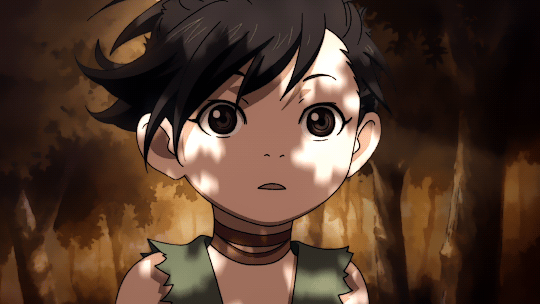
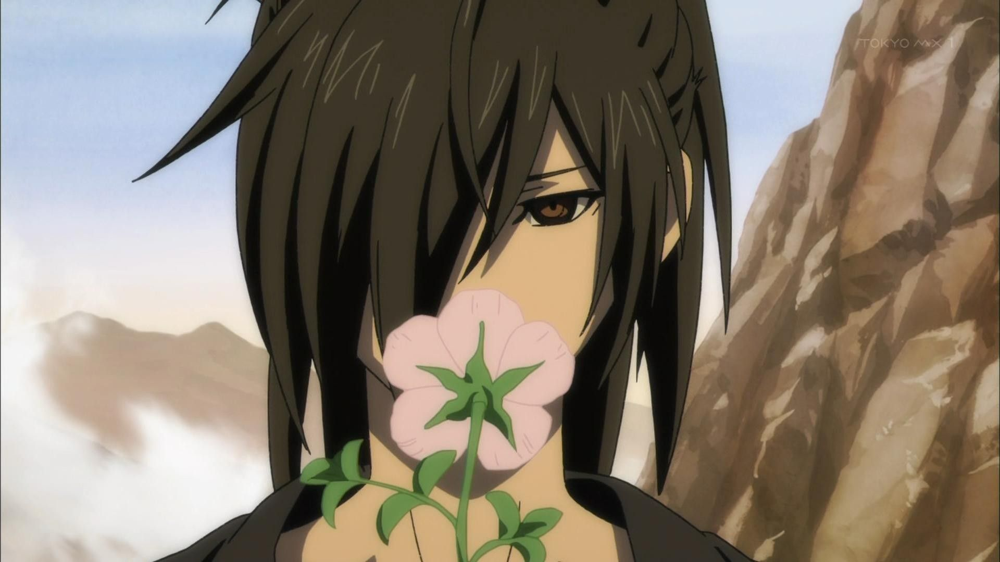

Dororo
Anime & Manga
A historia se baseia em um mangá escrito e ilustrado por Osamu Tezuka. A série gira em torno de um jovem errante chamado Hyakkimaru quem nasceu malformado e é obrigado a matar demônios para obter as partes do corpo que lhe faltam.
Conheça SobreSobre o Anime
De 1967 a 2019
Dororo é um anime baseado no mangá clássico de Osamu Tezuka, ambientado no período Sengoku do Japão. A trama segue Hyakkimaru, um jovem guerreiro que nasceu sem várias partes do corpo devido a um pacto que seu pai fez com demônios para garantir poder. Hyakkimaru busca recuperar as partes perdidas derrotando os demônios e é acompanhado por Dororo, uma criança órfã. Juntos, enfrentam monstros e desafios, explorando temas de humanidade, sacrifício e redenção. A nova adaptação de 2019 trouxe a história para uma nova geração com animação moderna e uma narrativa intensa.

